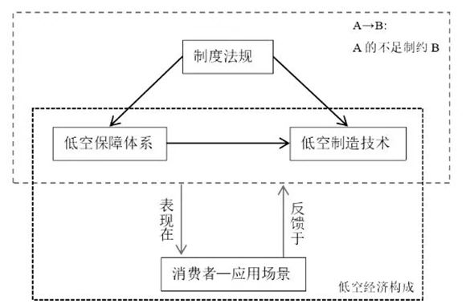
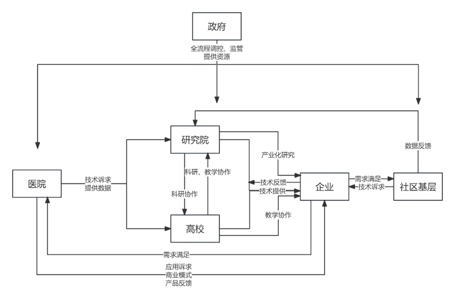

AI赋能社会治理现代化：多领域实践与创新路径研究
2025年清华大学学生寒假社会实践品牌项目总结报告
AI赋能社会治理现代化：多领域实践与创新路径研究
内容摘要：在数字全球化与治理现代化双重驱动下，本研究基于京沪深等7城调研，系统剖析AI技术在社会治理中的创新路径。通过71家政企研机构实证研究，聚焦智能交通、民生服务、城市治理三大场景，提炼出数字孪生港口、方言智能识别、无人机物流破局等典型范式。研究揭示技术赋能呈现"基建智能-流程重构-范式革新"三阶递进规律，同时暴露数据融合、制度适配、认知协同等深层梗阻。据此构建"三横三纵"框架，提出低空监管沙盒、跨域转化平台等创新机制，为"AI+"国家战略提供决策支撑。
关键词：智能治理 技术赋能 跨域协同 中国方案
近年来，人工智能技术的深度演进正在重构社会治理的底层逻辑。2024年《政府工作报告》首次提出"人工智能+"行动计划，标志着AI技术正式从产业赋能迈向治理体系重构的新阶段。中国依托全球领先的数字基建（如杭州亚运会智能指挥平台、成都智算中心等）与复杂治理场景，正在探索具有中国特色的智能治理新范式。本研究基于对北京、上海、深圳、杭州、武汉、成都及大连等创新枢纽的深度调研，聚焦智能交通、民生服务等核心领域，系统揭示技术赋能社会治理的实践突破与制度创新。
本次实践的创新价值在于构建"技术-制度-社会"三维分析框架，在2025年寒假期间，对71家机构（含19个政府部门、30家领军企业、15所高校及7个社区）开展深度调研，发现中国AI治理创新呈现出显著的"非对称演进"特征：在智慧港口领域，数字平台建设极大提升了口岸服务效率；但低空经济的普及还存在种种问题。这种技术赋能与社会响应之间的张力，暴露出传统治理体系在智能时代的结构性矛盾。研究进一步揭示，突破现有困境需要构建"三横三纵"协同机制——在技术层实现基础设施、核心算法与应用终端的纵向贯通，在制度层建立标准体系、监管机制与激励政策的横向联动，在社会层形成公众参与、伦理规范与文化培育的立体网络。此外，对于实践中的痛点问题，本次研究希望通过学生AI科创的方式提供解决思路。
本研究不仅为"人工智能+"国家战略提供实践注脚，更通过提炼中国特色的智能治理范式，为发展中国家破解技术赋能与治理转型的二元困境提供新思路。后续章节将围绕重点领域实践展开深度剖析，揭示技术赋能社会治理的内在逻辑与创新路径。
一、重点领域实践分析
智能交通治理
海上枢纽：智慧港口数字孪生系统
在全球贸易格局深度调整与数字技术快速迭代的双重驱动下，智慧港口建设已成为现代海运体系转型升级的核心战略。中国作为全球最大的贸易国，依托《加快建设交通强国五年行动计划（2023—2027年）》及《水运“十四五”发展规划》的政策指引，正加速推进港口智能化进程。在此背景下，大连市作为东北亚航运枢纽，率先构建智慧港口数字孪生系统，通过技术赋能实现港口治理的全局优化与能效跃升。
智能调度中枢建设
大连智慧港口数字孪生系统的核心架构由物理空间、数据中台、智能算法三大模块构成。物理空间通过物联网设备实时采集船舶动态、货物状态、设备运行等数据；数据中台依托区块链技术实现海关、物流、金融等多源数据的标准化清洗与安全共享；智能算法层则通过机器学习模型对港口作业进行动态仿真与决策优化。这一技术架构打破了传统港口的信息孤岛，使港口运营从经验驱动转向数据驱动。
监管服务模式重构
智慧监管体系的构建是大连港数字化转型的另一个重要组成部分。大连港通过与海关、海事等监管部门的协作，在监管工作中引入数据智能分析技术。以大连海关“数智筛”项目为例，该项目通过对进口商品进行实时税收风险评估，能够准确识别潜在风险商品，减少了对正常贸易企业的干预，从而提升了通关效率和监管精确性。此外，港口还通过先进的监控系统实时识别异常情况，增强了安全管理能力，提高了港口整体的管理水平。
生态协同网络构建
大连港在推动智慧港口建设的过程中，还注重创新服务模式，以满足企业多元化的需求。在这一背景下，大连自贸片区积极尝试“智能匹配+精准推送”的服务新模式，通过建立政策信息集成平台，企业能够快速获取符合其需求的政策支持。这一创新不仅提升了港口的服务质量，也为企业，尤其是中小企业，提供了更为便捷的服务渠道。
陆地网络：武汉车路协同的时空纵深
随着城市治理与智能交通需求的不断提升，车路协同技术正逐渐成为促进交通管理、公共安全及社会治理的重要解决方案。武汉，作为中国中部的交通重镇，凭借其在智能交通领域的技术积累，积极投入车路协同技术的开发与应用。武汉的车路协同技术不仅在历史上形成了独特的发展脉络，而且在当前和未来的社会治理中展现出了广泛的应用前景。
时空演进下的发展脉络
武汉的车路协同技术源于多年城市交通提升与管理的实践。早在20世纪初，武汉就因其独特的地理位置成为重要的交通枢纽。随着城市化进程加速，交通压力愈加突出，促使政府从传统的交通管理模式向智能化管理转型。进入21世纪后，武汉市不仅在智能交通硬件建设上取得显著成就，还在数据采集与分析、人工智能应用等领域实现了突破，形成了车路协同发展的良好基础。近年来，武汉通过引进先进技术和完善相关政策，逐步构建起了以智能交通为核心的综合交通管理体系。武汉在这一过程中，形成的智能化交通管理框架，使得城市在日益复杂的交通环境中能够灵活应对。
技术深化与治理赋能
当前，武汉市已经形成了以车路协同为核心的智能交通管理系统。这一系统整合了多源信息，包括道路状况、车辆动态、交通信号和环境条件，通过大数据和人工智能技术，实现实时监测与智能调度。此外，武汉市交通运输局与高德地图等企业的合作，提升了交通流量监测与预测的精准度，大幅提升了交通管理效率同时，车路协同的技术应用也延伸至公共安全和社会治理等多个维度，通过动态数据分析，政府可以对潜在的交通风险进行预判和防范。
在实际应用中，武汉的车路协同系统不仅限于交通管理。它也为公众提供了更智能化的出行体验，提高了市民对交通系统的信任度与满意度。随着技术的不断进步和社会需求的变化，车路协同技术很可能在未来的发展中扮演更加关键的角色，未来，伴随自动驾驶技术的推进，车路协同将为实现无人驾驶提供重要的数据支持和智能决策基础，进而提升道路通行效率，强化公共安全。武汉也将积极关注这一领域的发展，将其纳入更广泛的交通管理与社会治理框架之中，以确保技术进步与城市需求的高度匹配。
低空经济：深圳无人机物流三维困境破局
作为新质生产力的重要载体，低空经济正重塑城市物流体系的未来格局。深圳，凭借无人机产业链与政策创新，成为低空物流的先锋。然而，技术、制度与保障体系的失衡，构成了发展的三维困境。

图1 深圳无人机物流三维困境
技术壁垒：感知、通信与安全的多重挑战
在感知技术层面，激光雷达与毫米波雷达的多传感器融合虽可提升环境适应性，但数据分辨率差异、硬件集成冲突与高功耗等问题仍未解决。通信技术的短板同样突出，5G-A基站覆盖密度不足导致无人机在百米高空或建筑遮挡下频繁出现信号延迟，中兴通讯提出的通感一体化基站虽能同步完成环境感知与数据传输，但“幽灵镜像”误判现象仍使航线规划效率降低30%。安全保障方面，高层建筑密集导致的避障难题更使飞行事故风险居高不下。
保障滞后：基础设施与动态管控的失衡
深圳现有基础设施仍难以支撑商业化需求，低空保障体系的建设滞后于技术发展。美团无人机因依赖固定航线与专用换电站，恶劣天气下服务中断率高达45%，暴露出冗余设施不足的缺陷。空域管理平台的动态协调能力薄弱进一步加剧矛盾，分级审批模式导致即时配送响应延迟超15分钟。更严峻的是，微型无人机、物流无人机与载人飞行器的空域分层尚未明确，黑飞反制技术亦未突破瓶颈，深圳大学研发的单比特雷达受高楼遮挡影响，5公里探测范围实际覆盖率不足60%，公众对隐私泄露的担忧持续发酵。
制度迟滞：创新需求与监管框架的错位
制度供给与技术创新间存在“时间差”，现行空域管理机制沿用传统航空体系，无人机配送需提前7个工作日申报飞行计划，与即时性需求形成根本冲突。《无人驾驶航空器飞行管理暂行条例》虽已实施，但禁飞区划定等细则缺失导致深圳30%起降点建设因多头管理延期。
破局路径：技术-制度-保障的协同演进
破解三维困境需构建共生耦合的创新生态。技术上应重点攻关多模态传感器集成，通过轻量化芯片模组降低雷达融合成本，同时加速5G-A基站部署与频谱资源优化。保障体系需推进基础设施标准化，建立气象数据共享平台提升AI航线优化效能，并通过空域分配算法升级实现多飞行器协同。制度创新则须突破监管惯性，建立低空经济专属认证框架，试点“报备即飞行”管理模式，并制定隐私数据采集与事故责任细分规则。深圳可延续“渐进式改革”传统，通过政企协作构建“试点-反馈-迭代”机制，在安全红线内释放技术潜能，最终形成可复制的低空经济发展范式。这场新时代的“深圳实验”，或将引领城市物流进入三维立体化运营的新纪元。
民生服务创新
教育变革：AI赋能教育现状与展望
当前，AI技术正深刻重构教育生态。基于京沪两地的调研，AI在教育领域的应用已展现出提升效率、个性化教学及模式创新的潜力，但技术瓶颈、用户适应性差异与伦理风险等问题仍制约其发展。
应用现状的多维透视
AI的积极作用体现在三方面：一是打破传统教学时空限制，提供即时知识检索与个性化学习路径；二是缓解大班制下教师资源分配难题，通过数据驱动实现精准教学；三是创新课堂互动形式，例如通过对比AI与教师的观点激发思辨能力。然而，技术局限性亦不容忽视：数据模型在复杂问题处理中表现欠佳，算力与算法优化受制于外部技术封锁；AI工具的操作繁琐性、答案模糊性及商业化广告问题影响用户体验。此外，部分学生因担忧AI取代人类职业而对技术产生焦虑，折射出教育中职业规划引导的缺位。
未来发展的破局路径
技术层面，需突破算力瓶颈，优化算法架构，开发能适应多学科需求的智能模型。企业应深化与学校的合作，推动产品从“工具辅助”向“生态融合”转型，例如开发低蓝光设备、限制广告以回应家长关切。政策制定者需完善AI教育标准与数据安全法规，建立教育资源库促进技术普惠。教师培训体系亟待升级，通过渐进式培养策略帮助教师跨越技术鸿沟，针对学生依赖性问题，可构建“AI使用评估机制”，通过行为数据监测预警过度依赖风险。
前瞻性展望
随着《教育强国建设规划纲要》的推进，AI与教育的深度融合将加速。未来教育可能呈现三大趋势：一是“云端学校”与实体课堂互补的混合模式普及，推动教育资源跨区域流动；二是基于情感计算与多模态数据的学生心理健康监测系统成为标配，实现教育从“分数导向”向“全人培养”转型；三是AI驱动的动态评价体系取代传统考试，通过持续学习轨迹分析精准评估核心素养。要实现这些愿景，需构建政府主导、校企协同、家校联动的可持续发展生态，让技术真正服务于“人的全面发展”这一教育本质目标。
智慧医养：成都方言识别闭环方案
在成都市智慧医养产业的快速发展中，方言识别困难成为制约智能设备普及的核心障碍之一。基于“医研学产社一体化”模式，成都构建了涵盖数据收集、技术研发、应用落地的闭环解决方案，旨在通过多方协作攻克方言技术瓶颈，推动AI设备在老年群体中的有效应用。

图2 医研学产社一体化示意图
该方案以医院、社区、养老机构为数据采集前端，通过日常医疗服务收集方言语音素材，并由技术人员进行初步筛选与标注，确保数据的场景真实性与标注准确性。高校科研团队基于方言语言学特征开发针对性算法，例如针对四川方言的声调变化与词汇特殊性优化模型，同时开设方言识别技术课程培养专业人才。企业整合云端算力资源，依托成都智算中心的国产化算力支持，对数据进行深度训练与模型迭代，形成可识别特定医疗场景指令的语音处理系统。
然而，方言识别的突破仅是智慧医养生态的一环。当前AI产品仍面临软硬件支持不足、数据孤岛、伦理责任模糊等挑战。部分社区虽部署智能设备，但老年人使用率受操作复杂度影响仍偏低。未来需强化政策引导，推动小范围医疗数据安全共享，建立方言数据库的区域标准。企业需优化产品交互设计，开发低门槛操作界面，社区则可借鉴“健康银行”奖励机制，鼓励老年人使用AI设备完成健康自检等基础服务。
更深层的变革在于协同机制的完善。政府需通过算力补贴、数据法规等政策工具，降低中小企业的技术研发成本；高校应加强与企业的课题合作，推动算法创新与临床需求精准对接；医疗机构需主动开放部分脱敏数据，反哺技术迭代。只有构建“需求-研发-应用-反馈”的完整闭环，才能实现AI技术与医养场景的深度适配。
全民健康：竞技体育AI训练系统
AI赋能竞技体育
AI技术逐渐成为运动员训练与比赛的重要助手。多国国家队已采用AI辅助训练平台，这些平台结合可穿戴技术和非接触式设备，实时跟踪运动员身体数据。这种数据的实时分析不仅帮助教练制定个性化训练计划，还能有效避免运动员因过度训练而受伤。AI在比赛策略与战术分析上的应用也显著提高了竞技水平。中国乒乓球队利用AI技术实时跟踪和分析比赛细节，教练组据此制定合理战术。
智慧赛事筹办
AI技术在赛事管理与筹办中的应用也极为重要。通过大数据分析，赛事组织者能够优化赛程安排，减少冲突，提高场馆利用率，提升观众满意度。例如，2023年杭州亚运会赛事总指挥部的综合指挥平台，通过AI实现高效指挥，为赛事的顺利举办提供保障。同时，借助阿里云的支持，赛事转播与观赛体验也进行创新，融合AR和AI技术的虚拟制播平台为观众提供沉浸式的观赛体验。
AI助力民众运动与健康
AI科技的应用不仅限于竞技体育，在促进大众健身方面同样发挥重要作用。智能穿戴设备的研发中，结合AI技术能够实时监测运动者的状态和数据，提供精准的健身指导。然而，市场推广仍面临高售价和应用场景不足的问题。AI还在保障运动安全方面发挥着重要作用。以游泳为例，巨岩科技开发的“智能防溺水系统”通过AI视觉技术，对泳池中的异常情况进行实时监测，降低了溺水事故发生率，该技术已在多个游泳场馆成功部署，有效保障了民众安全。
二、典型框架与推广价值
构建"三横三纵"协同框架
技术层纵向贯通：夯实"基础设施-核心算法-应用终端"的技术链条。智慧港口数字孪生系统与车路协同体系的实践表明，需重点突破国产化算力瓶颈，开发场景自适应算法，并推动智能终端适老化改造。建议设立国家级智能基础设施专项基金，支持边缘计算节点与多模态感知设备的规模化部署。
制度层横向联动：构建"标准体系-监管机制-激励政策"的协同网络。深圳低空经济监管沙盒经验揭示，应建立动态标准更新机制，试点"监管即服务"模式，通过税收优惠、数据开放等政策工具激发市场主体活力。建议出台《智能治理促进法》，明确技术应用边界与责任认定规则。
社会层立体培育：形成"公众参与-伦理规范-文化认同"的共生生态。成都方言识别方案证明，需建立技术研发的社会融入机制，开发公民科学项目促进公众参与，构建"技术伦理双审查"制度。建议将AI素养培育纳入国民教育体系，设立智能治理文化传播专项。
实施三大突破路径
重点领域示范工程：在智能交通、智慧医疗、数字教育领域建设国家级示范区。武汉车路协同时空纵深发展经验表明，应聚焦"空-地-云"立体治理场景，构建跨部门数据共享平台。建议优先在长三角、粤港澳等区域布局示范工程，形成"技术创新-制度突破-社会响应"的集成化解决方案。
跨域技术转化平台：建立"政产学研用"五位一体的技术转化中枢。借鉴成都智慧医养闭环方案，搭建医疗AI技术中试基地，推动算法模型向适老化产品快速转化。建议设立区域性技术转化基金，完善知识产权共享机制，破解"实验室-应用场"的转化断层。
动态风险评估体系：构建"监测-预警-处置"的全周期风控机制。深圳无人机物流发展揭示，需建立智能治理风险图谱，开发基于大模型的动态评估系统。建议成立国家智能治理风险评估中心，建设覆盖重点领域的实时监测网络，建立技术应用"熔断机制"。
基于AI的社会问题治理的学生实践
船舶定制化问题中的AI方法
智能推荐系统在船舶定制化设计中的应用，使得AI能够基于客户的历史数据和需求，提供量身定制的设计方案。通过机器学习和数据分析，AI可以从大量的船舶设计数据中识别出潜在的模式和关联，进而为客户推荐最适合的配置。系统会首先分析客户的需求，例如航行距离、货物类型、预算限制等，再结合市场上的类似案例和现有的设计反馈，自动筛选出最符合需求的设计选项。
我们通过机器学习模型来预测不同设计变量对船舶性能（例如航速、燃料消耗等）的影响。假设我们有一些设计参数（如船体长度、宽度、引擎功率等）和相应的性能数据（航速、油耗等），我们可以用线性回归或其他回归算法来预测性能。
面向移动轨迹建模任务自动化的智能体平台
在武汉车路协同调研中我们发现，移动轨迹建模任务自动化方面，尽管已有一些工作，但尚未有一个智能体平台出现。一个可视化的界面和一些相关工具调用的支持将会极大地方便日常和相关科研工作的使用。另一方面，我们对TrajAgent的工作进行了了解，这给了我们很大的启发。我们也希望将TrajAgent集成到本平台中。
如前所述，移动轨迹建模任务尚缺少一个智能体平台；而已有的智能体平台在轨迹数据挖掘任务中的表现并不尽如人意。我们的创新点主要在于平台的可视化实现，以及借助大模型同时实现用户需求理解和调用专业工具完成分析。另外我们也将考虑引入TrajAgent底层支持的DL模型，实现更复杂的功能；也会考虑训练大模型自主学习专业工具，实现彻底的一体化。
心理教育AI流程设计
在上海调研中，我们意识到在心理教育中，AI的使用率较低，因此设计该系统，采用多模态评估框架，通过“行为数据+语义分析”双通道实现学生心理状态监测。流程分为四阶段：1）采集用户行为特征（屏幕时长、生理指标、学习轨迹）与文本输入；2）运用隔离森林算法检测行为异常模式，结合NLP关键词匹配解析语义风险；3）通过动态加权算法融合定量分析与定性评估，生成三级风险指数；4）基于风险等级触发分级干预机制，从自适应学习建议到人工介入形成闭环。系统创新性地构建"数据感知-智能诊断-动态干预"教育支持链，实现从被动响应到主动预防的转变。
基于联邦学习的三维重建——变电站数字孪生与缺陷管理
针对电力行业变电站设备巡检中存在的三维建模成本高、缺陷检测精度不足等问题，本项目通过无人机集群采集的多视角图像数据，结合联邦学习算法构建变电站数字孪生系统。该方法可在保护巡检数据隐私的前提下，实现设备三维模型的高效重建与实时更新，同步提升绝缘子开裂、导线锈蚀等缺陷的智能识别精度，为电网资产管理提供全生命周期数字化支持。
以国家电网某500kV变电站智能化改造项目为例，若采用本系统替代传统人工巡检与集中式建模方案，预计可降低70%的无人机数据传输成本，缩短约50%的模型迭代周期。通过联邦学习框架下多变电站数据的协同训练，能够显著提升极端天气等特殊场景下的缺陷识别鲁棒性，为电网企业节省大量检测经费。
方言识别AI流程设计
方言识别是制约智能设备在老年群体中普及的重要因素，其同样也是阻碍陪伴、交互机器人发展的主要阻力。语音数据的收集与处理是方言识别中的难点。以养老康复功能机器人为例，提出一种“医研学产社一体化”的解决方案。
开发企业应联合医院、社区卫生服务中心、养老机构、高校及研究院所，共同开展方言语音数据的收集与处理工作。各级医疗与养老机构在实际医疗场景中采集方言素材，经初步处理后上传至企业云端，用于训练语音处理大模型。高校与研究院则凭借科研优势，提供方言识别的核心算法支持与专业人才培训，为技术优化提供理论基础。同时，数算中心提供算力以支持大模型训练。
基于代码的AI智能跑步机解决方案
在实践中，有老师提出了当前国产健身器材精度以及舒适度不足的问题，例如常存在履带打滑的问题。因此，思考通过代码实现一些辅助功能来监测和提醒用户履带打滑的问题，同时尝试通过调整电机参数来缓解打滑现象。
通过编码器监测履带的实际转速，并与设定的目标转速进行比较。如果实际转速低于目标转速的一定比例（如低于80%），则判断为打滑。如果检测到打滑，可以尝试通过代码调整电机的电流或电压，增加电机的驱动力，以减少打滑的可能性。如果调整电机参数后仍然打滑，可以通过蜂鸣器或显示屏提醒用户检查履带的松紧度或润滑情况。
研究价值与展望
本研究通过提炼"问题导向创新-生态闭环构建-经验标准输出"的中国路径，为全球治理现代化贡献新范式。实证表明，中国智能治理创新具有三重独特优势：超大规模应用场景提供试错空间，新型举国体制加速技术突破，渐进式改革平衡风险与效率。未来研究需重点关注生成式AI对治理范式的颠覆性影响，探索虚实融合空间的治理规则。建议加强与发展中国家技术治理合作，推动"中国方案"向国际标准转化，为构建人类命运共同体提供技术治理新支点。
X、参考文献
[1] 国务院. 中华人民共和国国民经济和社会发展第十四个五年规划和2035年远景目标纲要[M]. 北京：人民出版社，2021.
[2] 辽宁省人民政府.大连全方位构建口岸智慧化生态服务体系.2024-12-06.
[3]深圳市发展和改革委员会. (2024). 深圳市低空基础设施高质量建设方案（2024-2026年）.
[4] 徐国冲, 张明月. 公共体育服务智慧化供给的实践困境与破解路径——以X市智慧体育平台建设为例[J]. 上海体育大学学报, 2024, 48(07): 56-65.
[5] 国家卫生健康委员会. “健康中国2030”规划纲要[M]. 北京：中国人口出版社，2020.